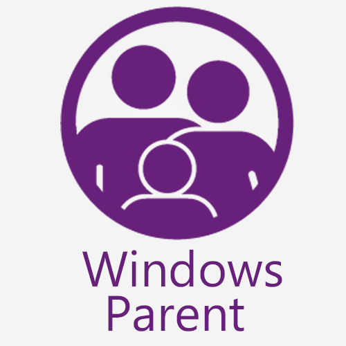
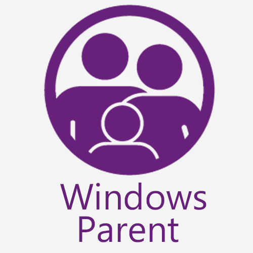

Windows Parent Publishes Their First Windows 8 App in Celebration of Their Third Year Anniversary
London, UK. (November 18, 2014) - In celebration of their third year anniversary Windows Parent launches their first Windows 8 app - App Discovery by Windows Parent. This latest addition to the Windows Parent platform was published with the purpose of helping parents discover family-friendly apps among the 175,000 apps currently available in the Windows Apps Store. The app contains Windows Parent curated catalog which until now was only available on Windows Phone and online. With over 6,000 followers via social media channels such Twitter, Facebook and Pinterest, Windows Parent recommendations are followed by more and more families every day, helping English speaker app developers connect with families in English-speaking markets as well as 19 Spanish-speaking markets via its sister Spanish platform Familia Windows.
Windows Parent's founder, Sandra Gonzalez, mother of two and a self-declared Windows evangelist, shared her thoughts on this milestone "The launch of App Discovery by Windows Parent to the Windows Store it's a great milestone for Windows Parent. The app is in its infancy, as it is the off-sprint of a hackaton hosted by Microsoft in London. However, I have great plans for it, including bringing all the categorization currently available in our website and also the localization of the app in at least three other languages"
Windows Parent also announces the launch of Rodzinny Windows, their app discovery platform in Polish, which is currently hosted on Pinterest. They are also in the process of expanding to French and Italian speaking markets.
App Discovery by Windows Parent can be found under the Education apps section of the Windows App Store, by following this link or scanning this QR code:
About Windows Parent
Windows Parent was born in November, 2011, with the mission of helping parents discover amazing apps on Windows Phone for the whole family. Initially conceived as a side project by a former Microsoft employer, User Experience Designer and mum of two, the project took quickly life on its own. Three years later Windows Parent is widely use by parents all over the world when looking for apps for their families on Windows platforms. Games, educational apps, quizzes, time-management tools and a wide variety of family-friendly apps can be found in their expanding, trustworthy catalog currently available in English, Spanish and Polish . Visit Windows Parent timeline infographic for more details about their story.
Follow them on Twitter, Facebook, Pinterest and Google+
Contact:
Sandra Gonzalez
WindowsParent.com
Contact: about-us/contact-us/
###

